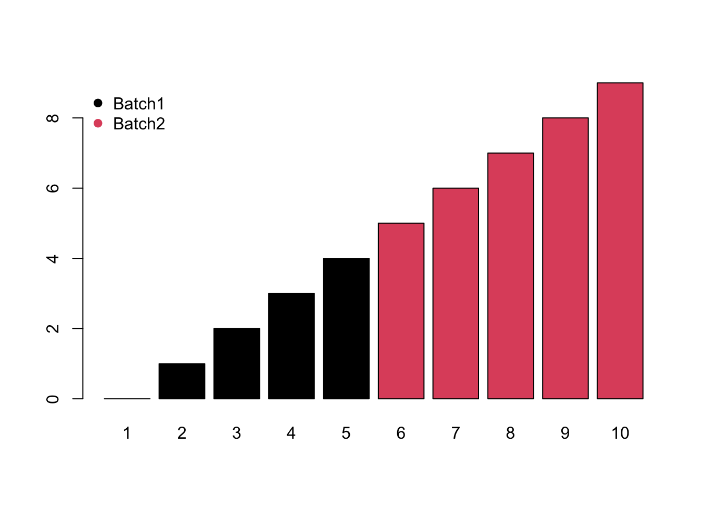
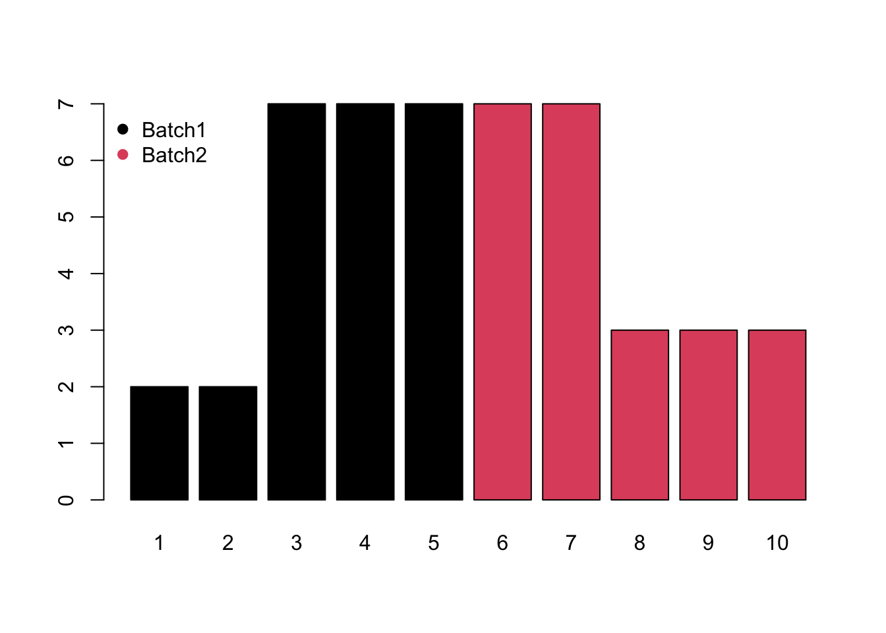
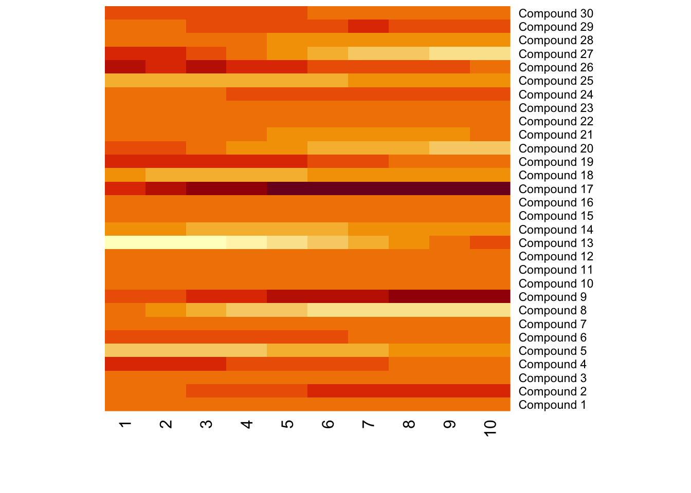

Chapter 9 Peaks normalization
9.1 Batch effects classification
Variances among the samples across all the extracted peaks might be affected by factors other than the experiment design. There are three types of those batch effects: Monotone, Block and Mixed.
- Monotone would increase/decrease with the injection order or batches.

- Block would be system shift among different batches.

- Mixed would be the combination of monotone and block batch effects.
Meanwhile, different compounds would suffer different type of batch effects. In this case, the normalization or batch correction should be done peak by peak.

9.2 Batch effects visualization
Any correction might introduce bias. We need to make sure there are patterns which different from our experimental design. Pooled QC samples should be clustered on PCA score plot.
9.3 Source of batch effects
Different Operators & Dates & Sequences
Different Instrumental Condition such as different instrumental parameters, poor quality control, sample contamination during the analysis, Column (Pooled QC) and sample matrix effects (ions suppression or/and enhancement)
Unknown Unknowns
9.4 Avoid batch effects by DoE
You could avoid batch effects from experimental design. Cap the sequence with Pooled QC and Randomized samples sequence. Some internal standards/Instrumental QC might Help to find the source of batch effects while it’s not practical for every compounds in non-targeted analysis.
Batch effects might not change the conclusion when the effect size is relatively small. Here is a simulation:
set.seed(30)
# real peaks
group <- factor(c(rep(1,5),rep(2,5)))
con <- c(rnorm(5,5),rnorm(5,8))
re <- t.test(con~group)
# real peaks
group <- factor(c(rep(1,5),rep(2,5)))
con <- c(rnorm(5,5),rnorm(5,8))
batch <- seq(0,5,length.out = 10)
ins <- batch+con
re <- t.test(ins~group)
index <- sample(10)
ins <- batch+con[index]
re <- t.test(ins~group[index])Randomization could not guarantee the results. Here is a simulation.
# real peaks
group <- factor(c(rep(1,5),rep(2,5)))
con <- c(rnorm(5,5),rnorm(5,8))
batch <- seq(5,0,length.out = 10)
ins <- batch+con
re <- t.test(ins~group)9.5 post hoc data normalization
To make the samples comparable, normalization across the samples are always needed when the experiment part is done. Batch effect should have patterns other than experimental design, otherwise just noise. Correction is possible by data analysis/randomized experimental design. There are numerous methods to make normalization with their combination. We could divided those methods into two categories: unsupervised and supervised.
Unsupervised methods only consider the normalization peaks intensity distribution across the samples. For example, quantile calibration try to make the intensity distribution among the samples similar. Such methods are preferred to explore the inner structures of the samples. Internal standards or pool QC samples also belong to this category. However, it’s hard to take a few peaks standing for all peaks extracted.
Supervised methods will use the group information or batch information in experimental design to normalize the data. A linear model is always used to model the unwanted variances and remove them for further analysis.
Since the real batch effects are always unknown, it’s hard to make validation for different normalization methods. Li et.al developed NOREVA to make comparision among 25 correction method (B. Li et al. 2017) and a recently updates make this numbers to 168 (Qingxia Yang et al. 2020). MetaboDrift also contain some methods for batch correction in excel (Thonusin et al. 2017). Another idea is use spiked-in samples to validate the methods (Franceschi et al. 2012) , which might be good for targeted analysis instead of non-targeted analysis.
Relative log abundance (RLA) plots(De Livera et al. 2012) and heatmap often used to show the variances among the samples.
9.5.1 Unsupervised methods
9.5.1.1 Distribution of intensity
Intensity collects from LC/GC-MS always showed a right-skewed distribution. Log transformation is often necessary for further statistical analysis.
9.5.1.2 Centering
For peak p of sample s in batch b, the corrected abundance I is:
\[\hat I_{p,s,b} = I_{p,s,b} - mean(I_{p,b}) + median(I_{p,qc})\]
If no quality control samples used, the corrected abundance I would be:
\[\hat I_{p,s,b} = I_{p,s,b} - mean(I_{p,b})\]
9.5.1.3 Scaling
For peak p of sample s in certain batch b, the corrected abundance I is:
\[\hat I_{p,s,b} = \frac{I_{p,s,b} - mean(I_{p,b})}{std_{p,b}} * std_{p,qc,b} + mean(I_{p,qc,b})\] If no quality control samples used, the corrected abundance I would be:
\[\hat I_{p,s,b} = \frac{I_{p,s,b} - mean(I_{p,b})}{std_{p,b}}\]
9.5.1.4 Pareto Scaling
For peak p of sample s in certain batch b, the corrected abundance I is:
\[\hat I_{p,s,b} = \frac{I_{p,s,b} - mean(I_{p,b})}{Sqrt(std_{p,b})} * Sqrt(std_{p,qc,b}) + mean(I_{p,qc,b})\]
If no quality control samples used, the corrected abundance I would be:
\[\hat I_{p,s,b} = \frac{I_{p,s,b} - mean(I_{p,b})}{Sqrt(std_{p,b})}\]
9.5.1.5 Range Scaling
For peak p of sample s in certain batch b, the corrected abundance I is:
\[\hat I_{p,s,b} = \frac{I_{p,s,b} - mean(I_{p,b})}{max(I_{p,b}) - min(I_{p,b})} * (max(I_{p,qc,b}) - min(I_{p,qc,b})) + mean(I_{p,qc,b})\]
If no quality control samples used, the corrected abundance I would be:
\[\hat I_{p,s,b} = \frac{I_{p,s,b} - mean(I_{p,b})}{max(I_{p,b}) - min(I_{p,b})} \]
9.5.1.6 Level scaling
For peak p of sample s in certain batch b, the corrected abundance I is:
\[\hat I_{p,s,b} = \frac{I_{p,s,b} - mean(I_{p,b})}{mean(I_{p,b})} * mean(I_{p,qc,b}) + mean(I_{p,qc,b})\]
If no quality control samples used, the corrected abundance I would be:
\[\hat I_{p,s,b} = \frac{I_{p,s,b} - mean(I_{p,b})}{mean(I_{p,b})} \]
9.5.1.7 Quantile
The idea of quantile calibration is that alignment of the intensities in certain samples according to quantile in each sample.
Here is the demo:
set.seed(42)
a <- rnorm(1000)
# b sufferred batch effect with a bias of 10
b <- rnorm(1000,10)
hist(a,xlim=c(-5,15),breaks = 50)
hist(b,col = 'black', breaks = 50, add=T)
# quantile normalized
cor <- (a[order(a)]+b[order(b)])/2
# reorder
cor <- cor[order(order(a))]
hist(cor,col = 'red', breaks = 50, add=T)
9.5.1.8 Ratio based calibration
This method calibrates samples by the ratio between qc samples in all samples and in certain batch.For peak p of sample s in certain batch b, the corrected abundance I is:
\[\hat I_{p,s,b} = \frac{I_{p,s,b} * median(I_{p,qc})}{mean_{p,qc,b}}\]
set.seed(42)
# raw data
I = c(rnorm(10,mean = 0, sd = 0.3),rnorm(10,mean = 1, sd = 0.5))
# batch
B = c(rep(0,10),rep(1,10))
# qc
Iqc = c(rnorm(1,mean = 0, sd = 0.3),rnorm(1,mean = 1, sd = 0.5))
# corrected data
Icor = I * median(c(rep(Iqc[1],10),rep(Iqc[2],10)))/mean(c(rep(Iqc[1],10),rep(Iqc[2],10)))
# plot the result
plot(I)
plot(Icor)9.5.1.9 Linear Normalizer
This method initially scales each sample so that the sum of all peak abundances equals one. In this study, by multiplying the median sum of all peak abundances across all samples,we got the corrected data.
set.seed(42)
# raw data
peaksa <- c(rnorm(10,mean = 10, sd = 0.3),rnorm(10,mean = 20, sd = 0.5))
peaksb <- c(rnorm(10,mean = 10, sd = 0.3),rnorm(10,mean = 20, sd = 0.5))
df <- rbind(peaksa,peaksb)
dfcor <- df/apply(df,2,sum)* sum(apply(df,2,median))
image(df)image(dfcor)
9.5.1.10 Internal standards
\[\hat I_{p,s} = \frac{I_{p,s} * median(I_{IS})}{I_{IS,s}}\]
Some methods also use pooled calibration samples and multiple internal standard strategy to correct the data (van der Kloet et al. 2009; Sysi-Aho et al. 2007). Also some methods only use QC samples to handle the data (Kuligowski et al. 2015).
9.5.2 Supervised methods
9.5.2.1 Regression calibration
Considering the batch effect of injection order, regress the data by a linear model to get the calibration.
9.5.2.2 Batch Normalizer
Use the total abundance scale and then fit with the regression line (S.-Y. Wang, Kuo, and Tseng 2013).
9.5.2.3 Surrogate Variable Analysis(SVA)
We have a data matrix(M*N) with M stands for identity peaks from one sample and N stand for individual samples. For one sample, \(X = (x_{i1},...,x_{in})^T\) stands for the normalized intensities of peaks. We use \(Y = (y_i,...,y_m)^T\) stands for the group information of our data. Then we could build such models:
\[x_{ij} = \mu_i + f_i(y_i) + e_{ij}\]
\(\mu_i\) stands for the baseline of the peak intensities in a normal state. Then we have:
\[f_i(y_i) = E(x_{ij}|y_j) - \mu_i\]
stands for the biological variations caused by the our group, for example, whether treated by exposure or not.
However, considering the batch effects, the real model could be:
\[x_{ij} = \mu_i + f_i(y_i) + \sum_{l = 1}^L \gamma_{li}p_{lj} + e_{ij}^*\] \(\gamma_{li}\) stands for the peak-specific coefficient for potential factor \(l\). \(p_{lj}\) stands for the potential factors across the samples. Actually, the error item \(e_{ij}\) in real sample could always be decomposed as \(e_{ij} = \sum_{l = 1}^L \gamma_{li}p_{lj} + e_{ij}^*\) with \(e_{ij}^*\) standing for the real random error in certain sample for certain peak.
We could not get the potential factors directly. Since we don’t care the details of the unknown factors, we could estimate orthogonal vectors \(h_k\) standing for such potential factors. Thus we have:
\[ x_{ij} = \mu_i + f_i(y_i) + \sum_{l = 1}^L \gamma_{li}p_{lj} + e_{ij}^*\\ = \mu_i + f_i(y_i) + \sum_{k = 1}^K \lambda_{ki}h_{kj} + e_{ij} \]
Here is the details of the algorithm:
The algorithm is decomposed into two parts: detection of unmodeled factors and construction of surrogate variables
9.5.2.3.1 Detection of unmodeled factors
Estimate \(\hat\mu_i\) and \(f_i\) by fitting the model \(x_{ij} = \mu_i + f_i(y_i) + e_{ij}\) and get the residual \(r_{ij} = x_{ij}-\hat\mu_i - \hat f_i(y_i)\). Then we have the residual matrix R.
Perform the singular value decompositon(SVD) of the residual matrix \(R = UDV^T\)
Let \(d_l\) be the \(l\)th eigenvalue of the diagonal matrix D for \(l = 1,...,n\). Set \(df\) as the freedom of the model \(\hat\mu_i + \hat f_i(y_i)\). We could build a statistic \(T_k\) as:
\[T_k = \frac{d_k^2}{\sum_{l=1}^{n-df}d_l^2}\]
to show the variance explained by the \(k\)th eigenvalue.
Permute each row of R to remove the structure in the matrix and get \(R^*\).
Fit the model \(r_{ij}^* = \mu_i^* + f_i^*(y_i) + e^*_{ij}\) and get \(r_{ij}^0 = r^*_{ij}-\hat\mu^*_i - \hat f^*_i(y_i)\) as a null matrix \(R_0\)
Perform the singular value decompositon(SVD) of the residual matrix \(R_0 = U_0D_0V_0^T\)
Compute the null statistic:
\[ T_k^0 = \frac{d_{0k}^2}{\sum_{l=1}^{n-df}d_{0l}^2} \]
Repeat permuting the row B times to get the null statistics \(T_k^{0b}\)
Get the p-value for eigengene:
\[p_k = \frac{\#{T_k^{0b}\geq T_k;b=1,...,B }}{B}\]
- For a significance level \(\alpha\), treat k as a significant signature of residual R if \(p_k\leq\alpha\)
9.5.2.3.2 Construction of surrogate variables
Estimate \(\hat\mu_i\) and \(f_i\) by fitting the model \(x_{ij} = \mu_i + f_i(y_i) + e_{ij}\) and get the residual \(r_{ij} = x_{ij}-\hat\mu_i - \hat f_i(y_i)\). Then we have the residual matrix R.
Perform the singular value decompositon(SVD) of the residual matrix \(R = UDV^T\). Let \(e_k = (e_{k1},...,e_{kn})^T\) be the \(k\)th column of V
Set \(\hat K\) as the significant eigenvalues found by the first step.
Regress each \(e_k\) on \(x_i\), get the p-value for the association.
Set \(\pi_0\) as the proportion of the peak intensity \(x_i\) not associate with \(e_k\) and find the numbers \(\hat m =[1-\hat \pi_0 \times m]\) and the index of the peaks associated with the eigenvalues
Form the matrix \(\hat m_1 \times N\), this matrix\(X_r\) stand for the potential variables. As was done for R, get the eigengents of \(X_r\) and denote these by \(e_j^r\)
Let \(j^* = argmax_{1\leq j \leq n}cor(e_k,e_j^r)\) and set \(\hat h_k=e_j^r\). Set the estimate of the surrogate variable to be the eigenvalue of the reduced matrix most correlated with the corresponding residual eigenvalue. Since the reduced matrix is enriched for peaks associated with this residual eigenvalue, this is a principled choice for the estimated surrogate variable that allows for correlation with the primary variable.
Employ the \(\mu_i + f_i(y_i) + \sum_{k = 1}^K \gamma_{ki}\hat h_{kj} + e_{ij}\) as the estimate of the ideal model \(\mu_i + f_i(y_i) + \sum_{k = 1}^K \gamma_{ki}h_{kj} + e_{ij}\)
This method could found the potential unwanted variables for the data. SVA were introduced by Jeff Leek (Leek and Storey 2008, 2007; Leek et al. 2012) and EigenMS package implement SVA with modifications including analysis of data with missing values that are typical in LC-MS experiments (Karpievitch et al. 2014).
9.5.2.4 RUV (Remove Unwanted Variation)
This method’s performance is similar to SVA. Instead find surrogate variable from the whole dataset. RUA use control or pool QC to find the unwanted variances and remove them to find the peaks related to experimental design. However, we could also empirically estimate the control peaks by linear mixed model. RUA-random (Livera et al. 2015; De Livera et al. 2012) further use linear mixed model to estimate the variances of random error. A hierarchical approach RUV was recently proposed for metabolomics data(T. Kim et al. 2021). This method could be used with suitable control, which is common in metabolomics DoE.
9.5.2.5 RRmix
RRmix also use a latent factor models correct the data (Jr et al. 2017). This method could be treated as linear mixed model version SVA. No control samples are required and the unwanted variances could be removed by factor analysis. This method might be the best choice to remove the unwanted variables with common experiment design.
9.5.2.6 Norm ISWSVR
It is a two-step approach via combining the best-performance internal standard correction with support vector regression normalization, comprehensively removing the systematic and random errors and matrix effects(Ding et al. 2022).
9.7 Software
BatchCorrMetabolomics is for improved batch correction in untargeted MS-based metabolomics
MetNorm show Statistical Methods for Normalizing Metabolomics Data.
BatchQC could be used to make batch effect simulation.
Noreva could make online batch correction and comparison(J. Fu et al. 2021).